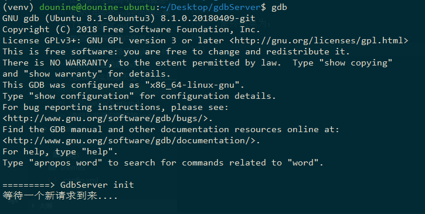

0. 前言
gdb是一个十分强大的调试器，而它又提供给python扩展的gdb模块。但是，该模块只有在gdb中，才能被成功导入。
1 | import gdb |
运行上述代码，报错显示没有gdb模块。因为只有在gdb加载该python文件时，才能运行成功：
1 | (gdb) source xxx.py |
为了解决这个问题，可以利用python语言的强大，通过socket套接字编写，在gdb中开启一个服务器，从而到达外界与gdb之间的交互。
1. 代码示例
1 | import gdb |
通过socket模块，开启一个tcp服务器，然后监听一个端口，接收客户端的请求，并对请求做出响应。
过程中，通过gdb模块中提供给python的api，进行对gdb的调用，如：gdb.execute('start', to_string=True) 执行start命令，并返回字符串。更多api见官方文档。
2. 运行与结果
假如实现了gdb服务器的代码文件为xxx.py，所在路径为yyy。
运行方法为：
1 | gdb |
进入gdb命令行界面，然后：
1 | (gdb) source xxx.py |
或者：
1 | echo "source yyy/xxx.py" >> ~/.gdbinit |
最终结果为：

3. 问题
虽然通过python编写socket服务器，可以实现外界与gdb的交互。但是，这样不优雅，也比较浪费。
同时，在gdb中实现的这个服务端，只是运行当前gdb中的一个扩展。而一个gdb同一时刻只能调试一个文件，该服务器又不可能让外层gdb多线程进行。
所以，任意一个用户访问，都只能得到当前gdb调试的进度和状态。也就是说，它只能为一个用户服务。
而要为多用户服务，必须开启多个gdb服务端，但如果只是主机间的进程交互的话，这样是十分低效的。
更高效的方法应该是，用进程间通讯代替tcp通讯。